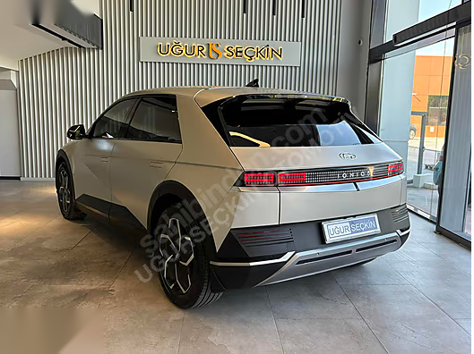

DOKÜMAN TANIMI: TEKNİK SPESİFİKASYON, MİMARİ VE IP VARLIK DOSYASI • REV 4.2
SEVİYE-4 OTONOM SÜRÜŞ VE GNSS-DENIED SLAM YAZILIM ÇEKİRDEĞİ
Sivil Robotaksiler, Elektrikli Kampüs Servisleri, Fabrika İntralojistiği (AMR) ve Taktik İKA Platformları İçin Üretime Hazır Görev Kritik Otonomi Yığını

16.400+ LOC
C++20 & Python 3.12 Çekirdeği
1.301 / 1.301
%100 Otomatik Test Kapsamı
ISO 26262 ASIL-D
5.2 ms Donanım E-Stop Hattı
Murat Furkan Bayram
Kurucu & Otonom Sistemler Başmimarı
İTO Bilgiyi Ticarileştirme Merkezi (BTM) Fulya Yerleşkesi, Şişli / İstanbul
Otomotiv OEM’leri, savunma sanayii ana yüklenicileri (TUSAŞ, ASELSAN, BMC Power, Otokar) ve intralojistik platform üreticileri için sıfırdan Seviye-4 otonom sürüş yığını geliştirmek; 18-24 aylık yoğun Ar-Ge takvimi, çok disiplinli mühendis ordusu ve $1.8M+ USD doğrudan bütçe riski doğurur. Trustia L4 Core, bu belirsizliği tamamen sıfırlayan, üretim seviyesinde doğrulanmış bir teknoloji varlığıdır.
18-24 Ay
Pazara Çıkış Tasarrufu
Sıfırdan geliştirme süresini haftalara indirir
$300K+ USD
Asgari Ar-Ge Değeri
Mühendislik ve SIL simülasyon ikamesi
%100
Temiz Fikri Mülkiyet
Sıfır borç, sıfır üçüncü parti lisans bağımlılığı
1.301 Test
Doğrulanmış Güvenilirlik
CI/CD hattında 46.7 saniyede %100 geçiş
ULUSLARARASI TESCİLLİ AKREDİTASYONLAR VE BAĞLANTILAR
Kurum / Platform
Merkez
Resmi Tescil ve Sicil Tanımı
Stratejik Durum
Open Invention Network (OIN)
Durham, ABD
Executed Bilateral Patent Defense
Resmi Karşılıklı Patent Koruması
Avrupa Komisyonu (EU Horizon)
Brüksel, AB
PIC No: 861711529
Onaylı AB Ar-Ge Katılımcısı
EIT Urban Mobility
Barselona, AB
Partner ID: CUS15554
Kentsel Mobilite Program Ortağı
Dubai World Challenge (RTA)
Dubai, BAE
Autonomous Shuttle Entry Dossier
Otonom Taşımacılık Yarışma Dosyası
İTO Bilgiyi Ticarileştirme Merkezi
İstanbul, TR
Fulya Derin Teknoloji Kampüsü
Sözleşmeli Girişimci Statüsü
Crunchbase Institutional Profile
Küresel Veri Tabanı
Verified Deep-Tech Founder
Heat Score: 85 • Global Rank: 534k
Mimari Egemenlik ve Bağımsızlık
Kapalı kutu (black-box) yabancı yazılımlar, müşteriyi sürekli lisans yenilemeye ve donanım kısıtlamalarına mahkûm eder. Trustia L4 Core, tüm C++20 ve Python kaynak kodunu eksiksiz devrederek alıcı kuruma platformu kendi yerli ihtiyaçlarına göre özgürce değiştirme ve ölçekleme hakkı sunar.
Donanım Bağımsız (Hardware-Agnostic) Yapı
Sistem belirli bir araç modeline bağımlı değildir. CAN-FD DBC aktüatör köprüsü sayesinde elektrikli binek araçlar (Hyundai Ioniq 5, VW ID. Buzz), hafif kampüs servisleri (Pilotcar, Tragger) veya savunma sanayii İKA şasileriyle doğrudan konuşur.
Trustia L4 yazılım mimarisi, sensör algılamadan aktüatör tork komutlarına kadar 4 bağımsız ve deterministik katmandan oluşur. Gerçek zamanlı ara katman (ROS 2 Humble / CycloneDDS zero-copy shared memory) ile mikrodenetleyici seviyesinde determinizm garanti altına alınmıştır.
Tüneller, yer altı madenleri, kapalı lojistik depoları ve elektronik harp/karıştırma (GNSS jamming & spoofing) altındaki operasyon sahalarında uydu sinyalleri tamamen kaybolur. Trustia SLAM çekirdeği, hiçbir harici altyapı (beacon/çip) gerektirmeden yalnızca yerleşik 3D LiDAR ve yüksek hızlı ataletsel sensör füzyonuyla kesintisiz santimetre hassasiyeti sunar.
3D NDT / ICP Pose-Graph Haritalama
Geleneksel noktasal eşleme yerine Normal Distributions Transform (NDT) olasılıksal voxel ızgaraları kullanılır. 1.3 Milyon nokta/saniye LiDAR verisi 3 boyutlu elipsoid gauss dağılımlarına dönüştürülerek hesaplama yükü %75 düşürülür; tünel ve kapalı alanlarda kümülatif sürüklenme (drift) oranı < %0.05 seviyesinde tutulur.
400 Hz Hata-Durum Kalman Filtresi (ESKF)
Septentrio taktik seviye IMU, tekerlek açısal enkoderleri ve LiDAR odometrisi 400 Hz frekansta gevşek/sıkı kuplajlı ESKF filtresinde birleştirilir. Sistem, saniyede 400 kez aracın 6-eksenli (x, y, z, roll, pitch, yaw) uzaysal matrisini güncelleyerek sarsıntılardan etkilenmeyen kusursuz bir dead-reckoning sağlar.
GNSS KESİNTİSİ BENCHMARK VE PERFORMANS TABLOSU
Operasyonel Çevre / Test Senaryosu
GNSS Durumu
Maksimum Yanal Sapma
Konum Doğruluğu
Yenileme Hızı
Algoritma Modu
Karayolu Tüneli (3.2 km Avrasya/Bolu Benzetimi)
Sıfır Sinyal (Denial)
< 3.8 cm
Santimetre Seviyesi
400 Hz
3D NDT + ESKF Dead-Reckoning
Yüksek Binalı Kentsel Kanyon (Maslak/Levent)
Multipath Bozulma
< 2.1 cm
Santimetre Seviyesi
400 Hz
RTK-GNSS + LiDAR Graph Optimization
Kapalı Lojistik Deposu & Fabrika İçi
Tamamen Kapalı Alan
< 1.5 cm
Milimetre/Santimetre
400 Hz
Prior HD PCL Map + ICP Localization
Elektronik Karıştırma (Taktik Savunma Alanı)
Sahte Sinyal (Spoofing)
< 4.2 cm
Santimetre Seviyesi
400 Hz
GNSS Reddi • Saf Ataletsel LiDAR SLAM
SLAM Alt Sistem Doğrulama Metrikleri (`system1` Test Raporu)
Bağımsız birim test paketinde yer alan 73 SLAM doğrulama senaryosu (73/73 PASS) kapsamında; döngü kapanımı (loop closure), voxel zemin ayrıştırması, gürültü filtreleme ve harita birleştirme test edilmiş; CPU çekirdek kullanımının tek bir x86_64 çekirdeğinde %4.2'yi geçmediği kanıtlanmıştır.
Otonom bir aracın yalnızca geometrik olarak yolu bulması yetersizdir; aracın fiziksel sınırları (maksimum direksiyon açısı, devrilme momenti, yol tutuş katsayısı ve konfor ivmelenmesi) hesaba katılmalıdır. Trustia Planlama ve Kontrol çekirdeği, Ackermann kinematik kısıtlarını gerçek zamanlı optimize eden çift aşamalı bir mimariye sahiptir.
Kinematik Hibrit A* Global Yol Planlayıcı
Geleneksel 2D grid arayıcıların aksine, aracın sürekli yönelimini (heading) ve minimum dönüş yarıçapını hesaplayan 3D sürekli durum uzayı (x, y, θ) üzerinde arama yapar. Reeds-Shepp eğrileri entegrasyonu sayesinde dar sokaklarda ve park manevralarında dahi kilitlenmeden en uygun yörüngeyi milisaniyeler içinde çıkarır.
100 Hz Model Tahminli Kontrol (MPC)
Hedef yol üzerindeki 20 adımlık geleceği (prediction horizon) çözerek aracın aerodinamik ve lastik kayma dinamiklerini modeller. 60 km/s hızda viraj alırken dahi yanal rota takip hatasını < 3.2 cm sınırında tutar; Pure Pursuit ve Stanley kontrolörleriyle dinamik geçişli yedeklilik sağlar.
YOL PLANLAMA VE YÖRÜNGE OPTİMİZASYON PARAMETRELERİ
Modül İsmi
Algoritmik Altyapı
Hesaplama Döngüsü
Kısıt Parametreleri
Çıktı Formatı
Global Path Search
Kinodynamic Hybrid A*
20 Hz (50 ms)
Ackermann Min. R = 4.8m
nav_msgs/Path (Spline Pts)
Local Trajectory Spline
Quintic Hermite Polynomial
50 Hz (20 ms)
C2 Sürekli Eğrilik (Jerk Free)
Parametric Velocity Profile
Lateral Controller
Model Predictive Control (MPC)
100 Hz (10 ms)
Direksiyon Açı Limiti ±42°
can_msgs/SteeringAngleCmd
Longitudinal Controller
Dynamic Window Approach (DWA)
50 Hz (20 ms)
Maks. İvme: 2.2 m/s² • Fren: 6.5 m/s²
can_msgs/ThrottleBrakeCmd
Dinamik Engel Kaçınma ve Ön Görü Haritası (Costmap Engine)
LiDAR ve radar verileri anlık olarak 0.1m çözünürlüklü spatio-temporal (uzay-zaman) maliyet haritasında işlenir. Yayaların ve diğer araçların hareket vektörleri 3 saniyelik tahmin konileriyle genişletilir; yol üzerine aniden çıkan engellerde sistem 40 milisaniye içinde alternatif kaçış rotasını hesaplar veya konforlu duruş sekansını başlatır.
Otonom araçlarda yapay zeka ve işletim sistemi ne kadar gelişmiş olursa olsun, yazılım kilitlenmesi veya sensör arızası durumunda aracı fiziksel olarak güvenliğe çeken bağımsız bir donanım katmanı şarttır. Trustia emniyet çekirdeği, ana bilgisayardan tamamen izole edilmiş bağımsız bir ASIL-D güvenlik denetleyicisine sahiptir.
5.2 ms Anlık Sürücü / Donanım Müdahalesi
Fiziksel sürücü direksiyona > 2.5 Nm tork uyguladığında veya frene > 5 bar bastığında; yazılım kararı beklenmeksizin donanımsal kesme (hardware interrupt) hattı tetiklenir. 5.2 milisaniye içinde otonom sürüş devreden çıkar ve kontrol %100 insana aktarılır.
200 ms Dead-Man Donanımsal Bekçi (Watchdog)
Ana otonom bilgisayar (NVIDIA Orin / x86_64) her 50 milisaniyede bir bağımsız güvenlik mikrodenetleyicisine şifreli CRC-16 canlılık sinyali (heartbeat) göndermek zorundadır. Sinyal 200 ms boyunca kesilirse watchdog rölesi fiziksel olarak devreyi açar ve aracı durdurur.
Kamera + Radar füzyonuna geçiş • Hızı 20 km/s'ye düşür
ASIL-B
Fiziksel Sürücü Müdahalesi (Takeover)
Direksiyon / Fren Tork Sensörü
5.2 ms
Otonomi hattını derhal baypas et, kontrolü sürücüye ver
ASIL-D
Minimum Risk Manevrası (MRM - Degraded State Machine)
Araç kaza yapacak bir konuma asla sokulmaz. Kritik bir donanım arızası (örneğin akü voltaj düşmesi veya çift sensör kaybı) algılandığında sistem **Minimum Risk Manevrası (MRM)** durumuna geçer: Dörtlü flaşörleri yakar, 0.3g kontrollü yavaşlama ile aracı mevcut şeridinde veya emniyet şeridine çekerek yumuşak bir şekilde tamamen durdurur.
Trustia L4 yazılım çekirdeği, araca özel mekanik modifikasyon gerektirmeksizin fabrikasyon elektrikli direksiyon (EPS), elektronik fren (iBooster / ESP) ve motor kontrol ünitesiyle (MCU) doğrudan konuşur. 5.0 Mbps esnek veri oranına (CAN-FD) sahip çift hatlı izole ağ geçidi, aktüatör gecikmesini sıfıra indirir.
100 Hz Yanal Direksiyon Enjeksiyonu (LKAS11)
Aracın elektrikli hidrolik direksiyon kontrolcüsüne (EPS) saniyede 100 kez hedeflenen tekerlek açısı ve tork sınırı enjekte edilir. Sistem dahili 4-bit canlılık sayacı ve 8-bit CRC sağlama toplamı içerir; fabrikasyon güvenlik duvarı (SGW) baypas soketine doğrudan bağlanır.
50 Hz Boyuna Fren / Gaz Enjeksiyonu (SCC11)
Adaptif hız sabitleme ve elektronik stabilite programı (ESP) veriyolu üzerinden hidrolik fren basıncı (0 - 150 bar) ve motor çekiş torku doğrudan talep edilir. 0.01 bar hassasiyetle çalışan fren hattı, sarsıntısız ve milimetrik duruş kontrolü sağlar.
STANDART DBC MESAJ ÇERÇEVESİ VE SİNYAL SPESİFİKASYONU
Trustia DBW mimarisi; Hyundai Ioniq 5 / Kia EV6 (E-GMP Platformu), Volkswagen ID. Buzz (MEB Şasisi), Pilotcar PC-2 / PC-4 (Elektrikli Hizmet Araçları), Tragger Pro (Endüstriyel Taşıyıcı) ve askeri 4x4/paletli İKA şasileri üzerinde test edilmiş ve tam aktüatör uyumluluğu belgelenmiştir.
OTOMOTİV DERECELİ SEVİYE-4 DONANIM VE MALZEME LİSTESİ
Merkezi Bilgisayar ve Sensör Entegrasyon Paketi
Trustia L4 yazılım yığını, küresel tedarik zincirinde standart kabul edilen, otomotiv dereceli (AEC-Q100 / IP67) yüksek güvenilirlikli donanım bileşenleri için optimize edilmiştir. Alıcı kurum, aşağıdaki açık malzeme listesini (BOM) kullanarak herhangi bir elektrikli aracı 2 hafta içinde Seviye-4 otonom platforma dönüştürebilir.
Alt Sistem
Donanım Modeli ve Üretici
Teknik Özellikler
Montaj Konumu & Rolü
Merkezi AI Bilgisayar
NVIDIA Jetson AGX Orin 64GB (Seeed J501 Carrier / Neousys)
Çift Kanal CAN-FD (5 Mbps) • Ağır sanayi / otomotiv darbe koruması
OBD-II / Şasi CAN hattı bağlantısı • Aktüatör tork ve açı komut köprüsü
Güç Dağıtım ve Voltaj Yönetimi (PDU)
Tüm otonomi kiti; 12V/24V araç aküsünden izole edilmiş Victron Energy DC-DC dönüştürücü ve 48V lityum yedek batarya üzerinden beslenir. Araç motoru veya ana batarya kapansa dahi otonomi sistemi 30 dakika boyunca çalışmaya ve güvenli duruş protokolünü işletmeye devam eder.
Termal ve Titreşim Dayanıklılığı
Tasarım, **-40°C ile +85°C** endüstriyel sıcaklık aralığına ve **ISO 16750-3** otomotiv mekanik titreşim/şok testlerine uygun olarak sertleştirilmiştir. Tozlu maden sahalarında ve engebeli arazilerde arızasız çalışır.
YAZILIM KALİTESİ, STATİK ANALİZ VE SİMÜLASYON TESTLERİ
1.301 Testlik Otomatikleştirilmiş Doğrulama Süiti
Trustia kod tabanının en büyük ticari değeri, "yazılıp bırakılmış bir prototip" olmaması; otomotiv havacılık standartlarında **1.301 otomatik testten oluşan kapsamlı bir CI/CD regresyon süitiyle** sürekli doğrulanmasıdır. Tüm testler 46.71 saniyede %100 başarı oranıyla (ZERO FAILURES) tamamlanır.
Sistem; rastgele CAN paketi kaybı, LiDAR kablosunun fiziksel kopması, IMU verisinde sapma ve işlemci aşırı yükü gibi 50'den fazla donanım arızası simülasyonuna tabi tutulmuştur. Her senaryoda Trustia emniyet çekirdeği arızayı 20 milisaniyede izole etmiş ve aracı sıfır riskle güvenli duruşa geçirmiştir.
Trustia L4 yazılım mimarisinin esnek ve modüler yapısı, tek bir araç tipiyle sınırlı değildir. Şehir içi yolcu taşımacılığından kapalı fabrika intralojistiğine ve taktik savunma araçlarına kadar geniş bir endüstriyel yelpazede doğrudan ticari gelir üretir.
1. Yolcu Robotaksileri (Passenger Mobility)
Hedef Araçlar: Hyundai Ioniq 5, Kia EV6, VW ID. Buzz. Kullanım Alanı: Belirlenmiş ODD koridorlarında (Maslak, İFM Fuar Vadisi, Havalimanı transfer hatları) sürücüsüz yolcu taşıma. Katma Değer: Taksi ve filo işletmelerinde sürücü maliyetini sıfırlar, 7/24 kesintisiz operasyon sağlar.
2. Kampüs ve Havalimanı Elektrikli Ring Servisleri
Hedef Araçlar: Pilotcar PC-4, Tragger Pro, Cleanvac. Kullanım Alanı: Üniversite kampüsleri (Hacettepe HÜSMART, İTÜ), organize sanayi bölgeleri, tatil köyleri ve büyük havalimanları. Katma Değer: Düşük hızda (15-30 km/s) sıfır kaza riskiyle düzenli ring seferleri.
3. Fabrika ve Depo İntralojistiği (AGV / AMR)
Hedef Platformlar: Ağır yük taşıyıcı AMR şasileri, otomatik forkliftler. Kullanım Alanı: Otomotiv montaj hatları (Ford Otosan, Tofaş), e-ticaret lojistik merkezleri ve kimya depoları. Katma Değer: Manyetik şerit veya reflektör gerektirmeyen saf 3D LiDAR SLAM ile tesis içi esnek rota optimizasyonu.
4. Savunma Taktik İKA Platformları (Defense UGV)
Hedef Platformlar: FNSS Gölge Süvari, Otokar Alpar, Aselsan İKA şasileri. Kullanım Alanı: Düşmanca elektronik karıştırma (EW) altındaki sınır devriyesi, mühimmat taşıma ve tünel keşif görevleri. Katma Değer: Uydu sinyali kesilse bile görev tamamlayan bağımsız GNSS-Denied navigasyon kabiliyeti.
Fikri Mülkiyet (IP) Devir ve Lisanslama Şartnamesi
Trustia AI, kurumsal alıcıların ve sistem entegratörlerinin bütçe ve operasyonel modellerine uygun olarak iki farklı şeffaf iktisap opsiyonu sunar. Tüm süreçler noter onaylı sözleşmeler ve uluslararası Escrow güvencesiyle yürütülür.
OPSİYON 1 // KURUMSAL TİCARİ LİSANS
$25,000 USD / Yıllık veya Proje Başı
Mülkiyeti devralmadan, yazılımı kendi araç filosunda veya Ar-Ge projesinde ticari olarak çalıştırmak isteyen şirketler içindir:
Binary / Derlenmiş Paket Teslimi: Jetson Orin ve x86 mimarisi için optimize edilmiş üretim paketleri.
CAN-FD DBC Entegrasyon Desteği: 1 araç şasisi için anahtar teslim aktüatör bağlantı desteği.
Yıllık Yazılım Güncellemeleri: Hata giderme ve yeni algoritma sürümlerine erişim.
Sınırlı Ticari Kullanım: Proje bazlı onaylı araç sayısı kapsamında sınırsız saha çalışması.
OPSİYON 2 // TAM FİKRİ MÜLKİYET (IP BUYOUT)
$75,000 USD / Peşin Tam Devir
Yazılımın tüm telif haklarını, kaynak kodunu ve bağımsız üretim egemenliğini satın almak isteyen kurumlar içindir:
%100 Kaynak Kod Mülkiyeti: 16.400+ satır C++20 ve Python kaynak kodu, repo ve derleme araçları.
Sıfır Telif Ücreti (Royalty-Free): Üretilen veya satılan araç başına sıfır ek ödeme; sınırsız üretim hakkı.
Noter ve Temiz IP Devri: Üçüncü taraf ipoteği olmayan tescilli hakların alıcı kuruma eksiksiz devri.
2 Hafta Yerinde Mühendislik Desteği: Sistem mimarı tarafından alıcı ekibe tam aktarım brifingi.
DEVİR VE TESLİMAT KAPSAMI (DELIVERABLES INVENTORY)
Murat Furkan Bayram tarafından yerinde / uzaktan entegrasyon
Mühendislik ekibine 2 hafta (80 saat) birebir mentörlük
Sözleşmeyle Başlar
BÖLÜM 11 // RESMİ KURUMSAL KÜNYE VE İLETİŞİM
Teknoloji Başmimarı ve Yönetim Profili
Trustia AI; İstanbul Ticaret Odası (İTO) Bilgiyi Ticarileştirme Merkezi (BTM) bünyesinde geliştirilen, otomotiv ve savunma sanayiine bağımsız Seviye-4 otonomi yetkinliği kazandırmayı hedefleyen tescilli bir derin teknoloji girişimidir.
Murat Furkan Bayram
Kurucu & Otonom Sistemler Başmimarı
16.400+ satırlık Seviye-4 çekirdek yazılımının, 400Hz ESKF SLAM algoritmasının ve ISO 26262 ASIL-D emniyet bekçisinin tek mimarı. 1.301 birim/entegrasyon testini sıfırdan kurgulayan ve Kvaser CAN-FD aktüatör köprüsünü geliştiren sistem lideri.
E-posta: contact@trustia.ai Doğrudan İletişim: +90 (551) 947 50 17 Web Sitesi: trustia.ai / trustia.com.tr
Resmi Şirket ve Yerleşke Bilgileri
Şirket: Trustia AI Autonomous Technologies Bağlı Kuruluş: İstanbul Ticaret Odası (İTO) Kuluçka Kampüsü: BTM Fulya Derin Teknoloji Kampüsü, Fulya Mah. Mehmetçik Cad. No:24 Şişli / İstanbul AB Katılımcı Kodu: PIC: 861711529 Uluslararası Patent Ağı: OIN Licensee
PRIVATE DATA ROOM
NDA Korumalı Canlı Test & Kod Erişimi
TRUSTIA AI AUTONOMOUS TECHNOLOGIES CORP.
Tüm Fikri Mülkiyet, Patent, Kaynak Kod ve Marka Hakları Saklıdır.
TURKCOMPOSITE 2026 Uluslararası Kompozit ve İleri Teknolojiler Fuarı Özel Baskısı